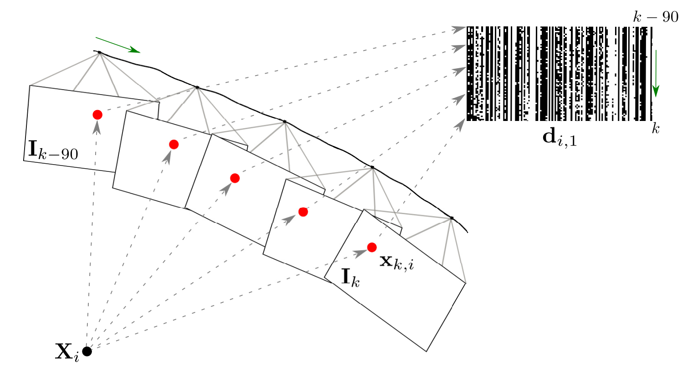

2020
Journals

A spatio-temporal multi-scale binary descriptor
A. Xompero, O. Lanz, and A. Cavallaro
Accepted in IEEE Transactions on Image Processing
Abstract
|
Bibtex
@misc{xompero2020TIP_MST,
title={A spatio-temporal multi-scale binary descriptor},
author={Alessio Xompero and Oswald Lanz and Andrea Cavallaro},
journal={IEEE Transactions on Image Processing},
volume={},
number={},
month={},
year={2020}
}
Binary descriptors are widely used for multi-view matching and robotic navigation. However, their matching performance decreases considerably under severe scale and viewpoint changes in non-planar scenes. To overcome this problem, we propose to encode the varying appearance of selected 3D scene points tracked by a moving camera with compact spatio-temporal descriptors. To this end, we first track interest points and capture their temporal variations at multiple scales. Then, we validate feature tracks through 3D reconstruction and compress the temporal sequence of descriptors by encoding the most frequent and stable binary values. Finally, we determine multi-scale correspondences across views with a matching strategy that handles severe scale differences. The proposed spatio-temporal multi-scale approach is generic and can be used with a variety of binary descriptors.
We show the effectiveness of the joint multi-scale extraction and temporal reduction through comparisons of different temporal reduction strategies and the application to several binary descriptors.
![[Handover header]](http://corsmal.eecs.qmul.ac.uk/benchmark/resources/handover.gif)
Benchmark for Human-to-Robot Handovers of Unseen Containers with Unknown Filling
R. Sanchez-Matilla, K. Chatzilygeroudis, A. Modas, N. Ferreira Duarte,
A. Xompero, P. Frossard, A. Billard, and A. Cavallaro
To appear in IEEE Robotics and Automation Letters
Abstract
|
PDF
|
Bibtex
|
Webpage
|
Video
|
Code
@misc{SanchezMatilla2020RAL_Benchmark,
title={Benchmark for Human-to-Robot Handovers of Unseen Containers with Unknown Filling},
author={Ricardo Sanchez-Matilla, Konstantinos Chatzilygeroudis, Apostolos Modas, Nuno Ferreira Duarte, Alessio Xompero, Pascal Frossard, Aude Billard, and Andrea Cavallaro},
journal={IEEE Robotics and Automation Letters},
volume={},
number={},
month={},
year={2020}
}
The real-time estimation through vision of the physical properties of objects manipulated by humans is important to inform the control of robots for performing accurate and safe grasps of objects handed over by humans. However, estimating the 3D pose and dimensions of previously unseen objects using only RGB cameras is challenging due to illumination variations, reflective surfaces, transparencies, and occlusions caused both by the human and the robot. In this paper, we present a benchmark for dynamic human-to-robot handovers that do not rely on a motion capture system, markers, or prior knowledge of specific objects. To facilitate comparisons, the benchmark focuses on cups with different levels of transparencies and with an unknown amount of an unknown filling. The performance scores assess the overall system as well as its components in order to help isolate modules of the pipeline that need improvements. In addition to the task description and the performance scores, we also present and distribute as open source a baseline implementation for the overall pipeline to enable comparisons and facilitate progress.
Conferences
Multi-view shape estimation of transparent containers
A. Xompero, R. Sanchez-Matilla, A. Modas, P. Frossard, and A. Cavallaro
Submitted to International Conference on Acoustics, Speech and Signal Processing (ICASSP)
Abstract
|
PDF
|
Bibtex
|
Data
|
Webpage
@misc{xompero2019multiview,
title={Multi-view shape estimation of transparent containers},
author={Alessio Xompero and Ricardo Sanchez-Matilla and Apostolos Modas and Pascal Frossard and Andrea Cavallaro},
year={2019},
eprint={1911.12354},
archivePrefix={arXiv},
primaryClass={cs.CV}
}
The 3D localisation of an object and the estimation of its properties, such as shape and dimensions, are challenging
under varying degrees of transparency and lighting conditions. In this paper, we propose a method for jointly localising
container-like objects and estimating their dimensions using two wide-baseline, calibrated RGB cameras. Under the assumption
of vertical circular symmetry, we estimate the dimensions of an object by sampling at different heights a set of sparse
circumferences with iterative shape fitting and image re-projection to verify the sampling hypotheses in each camera using
semantic segmentation masks. We evaluate the proposed method on a novel dataset of objects with different degrees of
transparency and captured under different backgrounds and illumination conditions. Our method, which is based on RGB
images only outperforms, in terms of localisation success and dimension estimation accuracy a deep-learning based
approach that uses depth maps.
PhD Thesis
Local features for view matching across independently moving cameras
PDF
Supervisors: Prof. Andrea Cavallaro (QMUL, UK), Dr. Oswald Lanz (FBK, IT)
Examiners: Dr. Stefan Leutenegger (Imperial College London, UK), Dr. Jean-Yves Guillemaut (University of Surrey, UK)
Abstract
Matching views across independently moving cameras is important for 3D reconstruction and navigation. However, severe geometric and photometric differences, such as viewpoint, scale, and illumination changes, can considerably decrease the matching performance. This thesis proposes novel, compact, local features that can cope with scale and viewpoint variations. We extract and describe an image patch at different scales of an image pyramid by comparing intensity values between learned pixel-pair locations, and employ a cross-scale distance when matching these features.
We capture, at multiple scales, the temporal changes of a 3D point, as observed in the visual stream of a camera, by tracking local image binary descriptors. After validating the feature-point trajectories through 3D reconstruction, we reduce, for each scale, the sequence of binary descriptors to a compact, fixed-length descriptor that identifies the most frequent and the most stable binary tests over time. We organise local spatio-temporal features extracted at a single scale in an incremental and adaptive ternary tree, which is stored locally within each camera. We then propose a novel decentralised approach that performs online cross-camera visual place recognition simultaneously to the formation of the tree, while the camera processes the video stream. Experiments show that the proposed approaches improve the accuracy when matching features across cameras, compared to existing approaches.
@INPROCEEDINGS{Lanz2019ICASSP,
title = {Accurate target annotation in 3D from multimodal streams},
author = {Lanz, Oswald and Brutti, Alessio, and Xompero, Alessio and Xinyuan, Qian and Omologo, Maurizio and Cavallaro, Andrea},
booktitle = ICASSP,
address = {Brighton, UK},
month = "12--17~" # may,
year = {2019}
}
Accurate annotation is fundamental to quantify the performance of multi-sensor and multi-modal object detectors and trackers.
However, invasive or expensive instrumentation is needed to automatically generate these annotations. To mitigate this problem,
we present a multi-modal approach that leverages annotations from reference streams (e.g. individual camera views) and measurements
from unannotated additional streams (e.g. audio) to infer 3D trajectories through an optimization. The core of our approach
is a multi-modal extension of Bundle Adjustment with a cross-modal correspondence detection that selectively uses measurements in the
optimization. We apply the proposed approach to fully annotate a new multi-modal and multi-view dataset for multi-speaker 3D tracking.
![[img]](images/diagram_ICASSP20.png)
![[img]](images/multisensor.png)
![[img]](images/MORB.png)
![[img]](images/fusion18_tds.png)
![[img]](images/cviu2016.jpg)